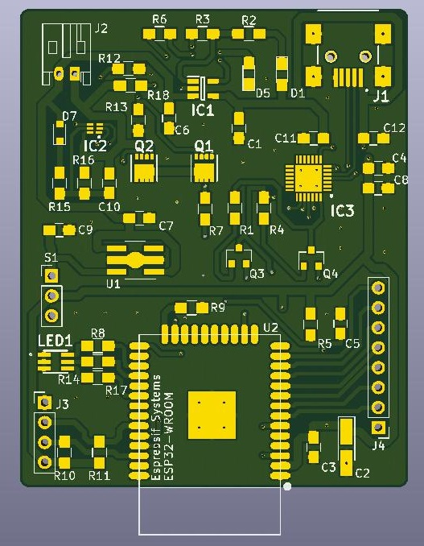
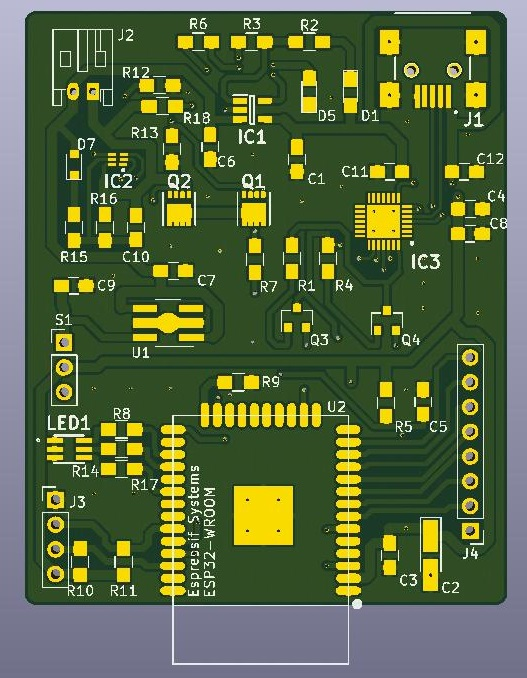

The MCU (Main Processor Unit)
The main processor unit comprises of the ESP32-WROOM module from espressiff. The power of the MCU is far greater than any AVR solution and even integrates a built-in WiFi antenna. The main PCB also houses the LDO, LiPo connector, Battery protection circuit, USB-serial converter and USB-ports, which are all needed for nominal performance. The size of the main PCB has been reduced to a remarkable 61x50mm enclosure to ensure the best esthetics and comfort we can accomplish without compromises.
The MCU connects to external IMU sensors right off the board, with the help of snap fasteners, to ensure easy attachment and deattachment of the MCU itself from the smart clothing.
The IMUs (Inertial Measurement Unit)
The inertial measurement units (or IMUs for short) are state of the are 9 DoF (Degrees of Freedom) sensors which make it possible to precisely map the movements of the user and deliver reliable information to the server. The IMUs used in this product are the MPU-9250s from Sparkfun and their 3D-printed enclosure ensures that the precious sensors are safe and sound from external sources.
The Web Interface
The Web interface makes it possible to remotely control a 3D-object in real-time with the help of the smart clothing. The MCU utilizes the web socket protocol to directly communicate with the web interface. Instant

As the image above illustrates, the web interface is very dymanic and easy to use. Set up everything and the smart clothing is sending data directly to the interface, which processes the information. The model replicates the exact movements of the user in real-time.